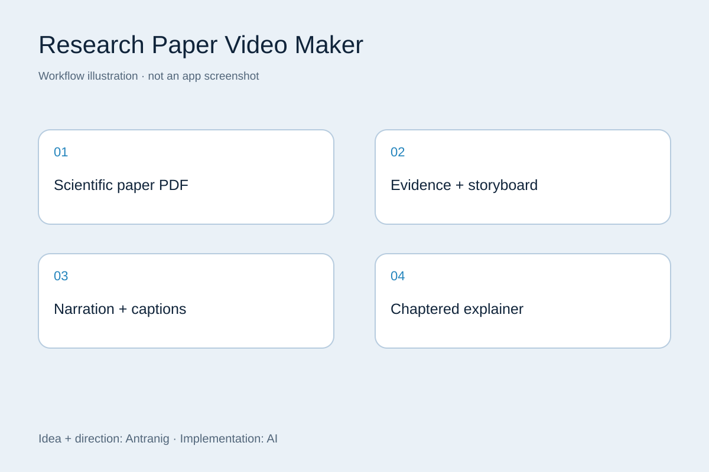

Research Paper Video Maker
Vibe-coded project: I supplied the idea, requirements, and feedback; AI wrote the implementation.
I wanted to get more familiar with AI while turning scientific papers into a format that was easier to digest.

What it does
Biomedical Research Video Studio is a local prototype for importing PDFs and producing narrated, chaptered explanations. It extracts paper content, builds storyboards, generates narration and captions, and assembles videos. The working visual route uses figures and deterministic animations; optional generative-video integrations are separate. Paper interpretation and evidence selection still require human review.
How it was built
Vibe-coded project: I supplied the idea, requirements, and feedback; AI wrote the implementation.
Technology: Python, FastAPI, Jinja2, PyMuPDF, LM Studio / Qwen, Kokoro, MLX Whisper, FFmpeg.
Current status
Paused. The prototype has rendering and local model integration work in place, but reliability issues and the quality of scientific explanations still need attention.
About the visual
The workflow illustration explains the project; it is not a screenshot of the application.